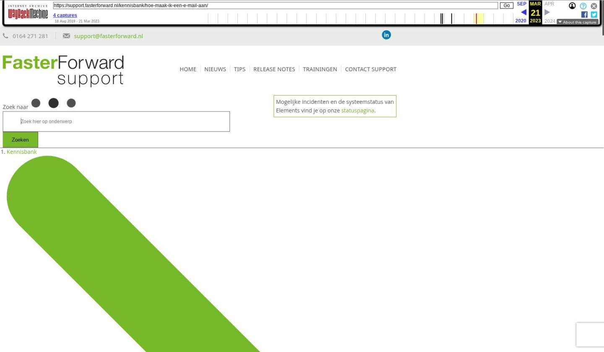

E-mail versturen vanuit e-mailbox

Tekstinhoud
E-mail versturen vanuit e-mailbox
Als je een nieuwe e-mail wilt versturen die je niet direct aan dossier wilt koppelen, dan doe je dit vanuit de e-mailmodule. Dit kan bijvoorbeeld zijn als je wat offertes aan het opvragen bent, maar nog niet weet of je zaken gaat doen met één van de bedrijven die je een e-mail stuurt.
Het nadeel van deze methode is dat je een e-mail handmatig moet koppelen aan een dossier, als je later toch een dossier hebt aangemaakt voor deze ontvanger.
1. Ga naar je mailbox
Vanuit de algemene inbox kun je een e-mail versturen zonder te zijn gekoppeld aan een dossier. Klik op het e-mail icoon in de navigatiebalk bovenaan je dashboard.
Je komt dan in de algemene inbox terecht. Links staan alle e-mailboxen waarvan je de rechten hebt om in te zien. Je kiest de e-mailbox vanwaar je de e-mail wilt gaan sturen. Boven de middelste kolom klik je op 'Opstellen'. Er verschijnt nu een scherm waar je de e-mail aanmaakt.
2. Kies afzender en ontvanger
Linksboven staat het e-mailadres geselecteerd vanwaar de e-mail verzonden zal worden. Dit is het standaard e-mail adres ingevuld bij 'mijn instellingen'.
Indien het gewenst is om de afzendernaam variabel te maken dan is het mogelijk om tags te gebruiken voor het vullen van de afzendernaam. Hierdoor kan bijvoorbeeld de naam van een medewerker als afzendernaam getoond worden wanneer er vanuit de infobox gemaild wordt. De afzendernaam dient via de e-mailmanager aangepast te worden. Hiervoor kun je contact opnemen met jullie interne Elements beheerder.
Daaronder vind je de 'Aan', 'CC' en 'BCC'.
Wanneer je bij 'aan' in het groene veld wat typt dan krijg je gerelateerde zoekresultaten te zien. Deze worden door heel Elements gezocht, namelijk in:
e-mailadressen van collega's
e-mailadressen van personen uit een dossier
e-mailadressen van personen gekoppeld aan organisaties uit een dossier
e-mailadressen van organisaties uit een dossier
e-mailgroepen van de gebruiker en publieke e-mailgroepen (aangemaakt door collega's en publiek gemaakt)
e-mailadressen uit e-mails die zich bevinden in de inbox van alle e-mailboxen waar de gebruiker toegang tot heeft (kijkt tot 2 jaar terug).
Het is helaas niet mogelijk om persoonlijke aanpassingen, bijvoorbeeld bepaalde e-mailadressen niet laten zien, door te voeren in de gerelateerde zoekresultaten.
Je kunt om een leesbevestiging vragen door het vinkje aan te zetten en een prioriteit meegeven.
3. Plaats standaardtekst en handtekening
Elements bevat standaardteksten die je kunt invoegen in e-mails. Deze selecteer je via het drop-down menu. Daaronder kan ook een handtekening geselecteerd worden en middels het plus-icoon worden toegevoegd.
4. Voeg bijlage(s) toe
Wil je een bestand of document meesturen als bijlage van de e-mail kan deze in het veld 'sleep hier je bestanden (of klik)' opgehaald worden.
5. Plaats het onderwerp en schrijf de tekst
Bij 'Plaats hier uw onderwerp' vul je het onderwerp van de e-mail in. Daaronder klik je in het tekstveld en typ je de tekst. Rechts boven vind je de knop 'Concept' om de e-mail in een concept op te slaan en de knop 'Annuleren' om de e-mail te verwijderen. Nadat de e-mail gereed is, kun je via de knop 'Verzenden' de e-mail daadwerkelijk versturen. Ook is het mogelijk om de e-mail in te plannen voor verzenden. Wanneer de e-mail verzonden is dan deze bij de verzonden items.
Laatste update: 22 november 2022
Tagged: aanmaken, e-mail, email, mail
Was deze informatie nuttig?
Ja Nee